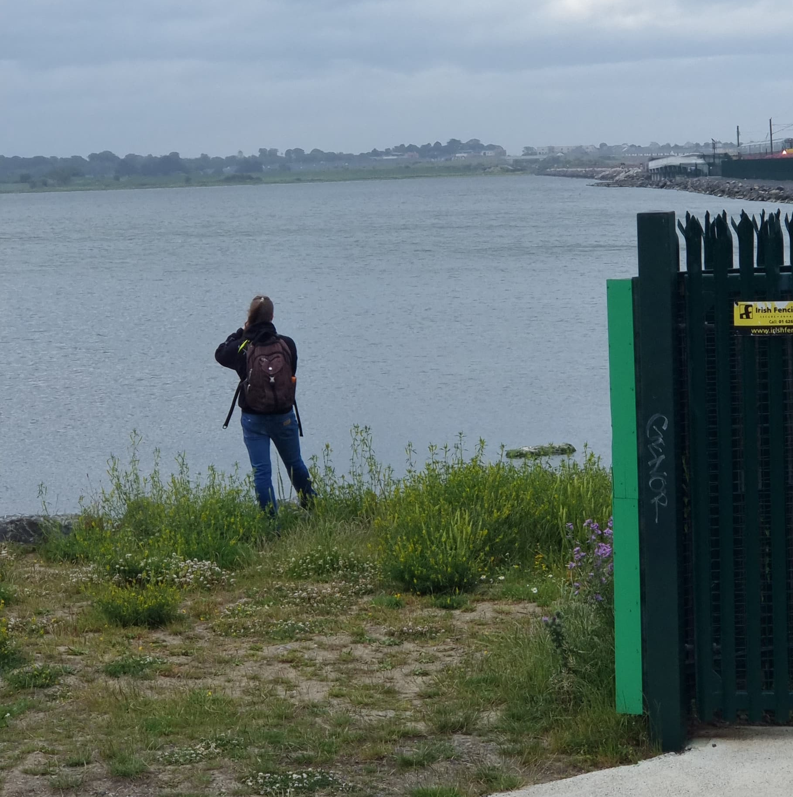

About Me
I'm an IT administrator in the nonprofit sector, where I use my tech skills to help people who help people. Beyond the world of tech, I enjoy photography and music. I actively share photos on Pixelfed, where I try to create a curated public archive of some of my favorite photos, as well as Mastodon, where I live much more in the moment, sharing whatever I like at the time. Follow either or both from anywere on the Fediverse, as I usually remember to boost my posts from one on the other.
My Current Projects
Full Moons of 2026
I'm Making an attempt to photograph every full moon in 2026. You can see the collection on Pixelfed here. So far I've only missed one due to clouds.

Photography Meetup Group
I run a meetup group called Photo & Chill, where people who share an interest in photography can gather in a relaxed environment to make a few pictures and chat over their choice of hot or cold beverage.